Прогнозируем поисковую активность в Яндексе с помощью Wordstat и Google Таблиц
Для правильного планирования бюджета на рекламную кампанию нам необходимо понимать, как в ближайшие несколько месяцев будет меняться поисковая активность пользователей. В этой статье я опишу один из самых простых алгоритмов построения прогноза.

Алгоритм прогнозирования поисковой активности
- Вычисляем линейный тренд на основе данных за последние два года.
- Вычисляем коэффициент сезонности для каждого месяца на основе данных за последние 2 года.
- Усредняем коэффициент сезонности за последние два года.
- Корректируем линейный тренд на усредненный коэффициент сезонности.
Для наглядного примера построим прогноз поисковой активности на ближайшие три месяца по запросу «купить обогреватель». Для того, чтобы получить исходные данные, необходимые для построения прогноза, воспользуемся бесплатным сервисом от Яндекса Wordstat. В данном случае нас интересует раздел «История запросов».
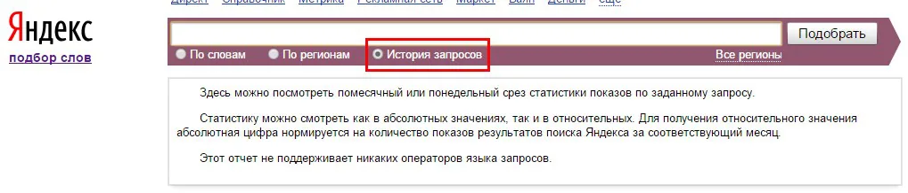
Далее в текстовом поле вводим запрос «купить обогреватель» и жмем «Подобрать». После этого будет сформирована таблица количества поисковых запросов «купить обогреватель» за последние два года. Данные из этой таблицы мы и будем использовать для построения прогноза.
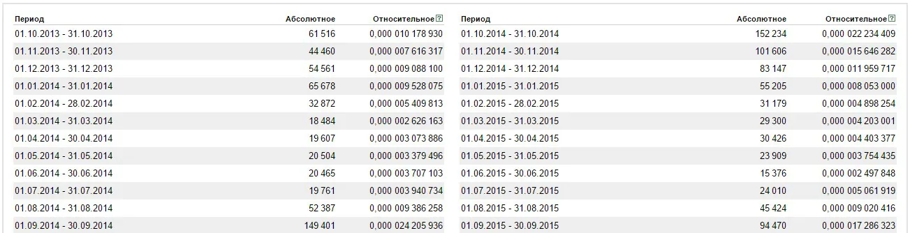
На самом деле из всей таблицы нас интересует поле «Абсолютное». Для того, чтобы очистить данные и оставить только нужное поле, необходимо перенести всю таблицу в любой процессор электронных таблиц. Для примера используем Google Таблицы, бесплатный и самый доступный инструмент. Создаем новую таблицу, после чего вставляем в нее скопированные из интерфейса Wordstat данные. Для этого достаточно просто выделить с помощью мыши таблицу в Wordstat, скопировать ее в буфер обмена с помощью контекстного меню и вставить в Google Таблицу.
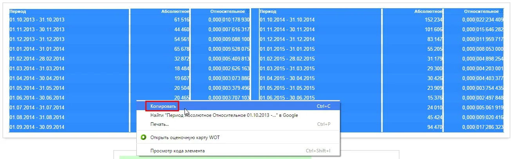
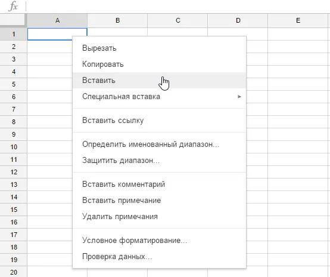
В результате в Google Таблице у нас будет вся необходимая для построения прогноза информация, осталось только очистить ее от мусора. Для этого удалим столбец C и строку 14, так как для расчетов они нам не понадобятся.
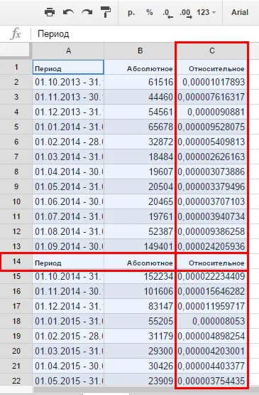
Теперь у нас есть данные, необходимые для дальнейшего расчета прогноза. Для последующих вычислений давайте добавим в нашу таблицу колонки:
- № наблюдения;
- № наблюдения в году;
- среднемесячное значение;
- коэффициент сезонности;
- усредненный коэффициент сезонности;
- линейный тренд;
- прогноз.
Таблица примет следующий вид:
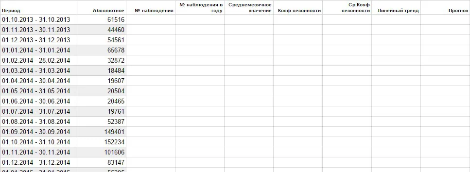
Теперь поочередно рассчитаем и заполним все колонки нашей таблицы, начиная с «№ Наблюдения». В данном случае каждый месяц является для нас отдельным наблюдением, в связи с чем достаточно просто пронумеровать строки от 1 до 27. До 27, потому что у нас есть данные за прошедшие 24 месяца, и на 3 следующих мы будем строить прогноз. Столбец «№ наблюдения» содержит скользящую нумерацию. Поле «Номер наблюдения в году» содержит информацию по годам (в данном случае мы используем не календарный год с января по декабрь, а год как отрезок времени в 12 месяцев), в связи с чем эта колонка будет заполнена числами от 1 до 12, повторяясь до конца таблицы. В результате эти поля будут выглядеть так:
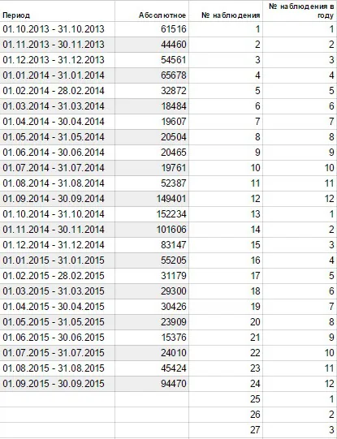
Для того, чтобы заполнить столбец «Среднемесячное значение», воспользуйтесь формулой: “=if(C2<13;average($B$2:$B$13);average($B$14:$B$25))”.
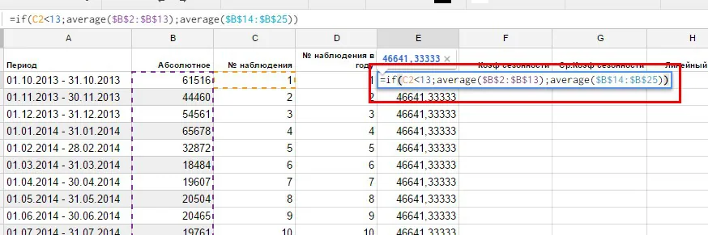
Дальше необходимо рассчитать коэффициент сезонности. Для этого необходимо разделить среднемесячный показатель на абсолютное значение. В нашем случае это делается с помощью формулы “=B2/E2”. Для расчета среднего коэффициента сезонности воспользуемся функцией AVERAGEIF:“=averageif($D$2:$D$25;D2;$F$2:$F$25)”.
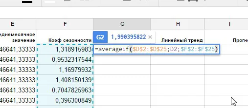
Для заполнения поля «Линейный тренд» в Google Таблицах существует функция FORECAST, которая, используя линейную регрессию, определяет предполагаемое значение Y, исходя из существующего значения X. В нашем случае X — это номер наблюдения, а Y — значение поля «Абсолютное». Так как столбец «Линейный тренд» необходим только для расчета прогноза, его стоит заполнять, начиная с 26 строки. Данные до 26 строки являются не прогнозными, а фактическими. Формула для расчета линейного тренда выглядит так: “=forecast(C26;$B$2:$B$25;$C$2:$C$25)”.
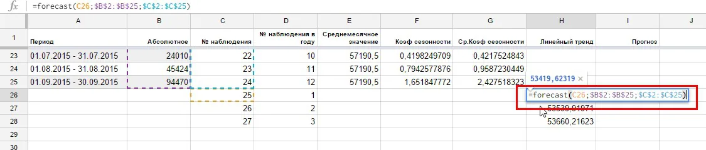
Для построения прогноза нам остается скорректировать линейный тренд на средний коэффициент сезонности. Каждый месяц имеет свой коэффициент сезонности, в связи с чем необходимо воспользоваться функцией VLOOKUP, чтобы подтянуть в расчет коэффициент сезонности нужного месяца. Формула для вычисления прогноза “=H26*vlookup(D26;$D$2:$G$25;4;0)”. Заполнять столбец «Прогноз» надо также с 26 строки.
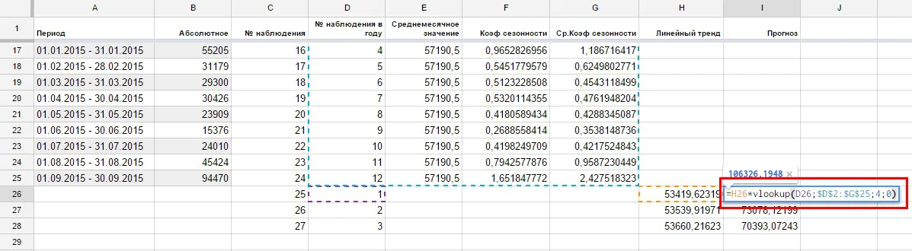
В результате всех проделанных вычислений должна получиться такая таблица:
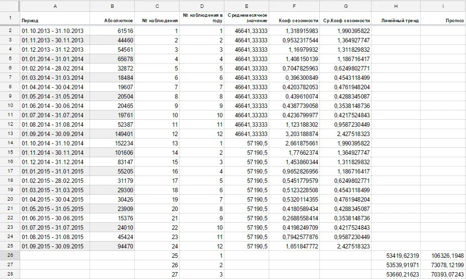
В столбце «Прогноз» мы рассчитали прогнозируемый объем поисковых запросов по фразе «купить обогреватель» на ближайшие три месяца. Формулы для расчета столбцов:
- Среднемесячное значение “=if(C2<13;average($B$2:$B$13);average($B$14:$B$25))”, заполняется со 2 по 25 строку, в столбце E.
- Коэффициент сезонности “=B2/E2”, заполняем со 2 по 25 строку в столбце F.
- Средний коэффициент сезонности “=averageif($D$2:$D$25;D2;$F$2:$F$25)”, заполняем со 2 по 25 строку в столбце G.
- Линейный тренд “=forecast(C26;$B$2:$B$25;$C$2:$C$25)”, заполняем с 26 по 28 строку в столбце H.
- Прогноз = “H26*vlookup(D26;$D$2:$G$25;4;0)”, заполняем с 26 по 28 строку в столбце I.
Формулы для тех, кто привык работать в Excel:
- Среднемесячное значение “=ЕСЛИ(C2<13;СРЗНАЧ($B$2:$B$13);СРЗНАЧ($B$14:$B$25))”, заполняется с 2 по 25 строку, в столбце E.
- Коэффициент сезонности “=B2/E2”, заполняем со 2 по 25 строку в столбце F.
- Средний коэффициент сезонности “=СРЗНАЧЕСЛИ($D$2:$D$25;D2;$F$2:$F$25)”, заполняем со 2 по 25 строку в столбце G.
- Линейный тренд “=ПРЕДСКАЗ(C26;$B$2:$B$25;$C$2:$C$25)”, заполняем с 26 по 28 строку в столбце H.
- Прогноз = “=H26*ВПР(D26;$D$2:$G$25;4;0)”, заполняем с 26 по 28 строку в столбце I.
Также мы можем графически показать данный расчет на гистограмме или графике. Для этого выделите паралельно два диапазона ‘Лист1’!B1:B28, ‘Лист1’!I1:I28 и, используя меню «Вставка» => «Диаграмма», постройте нужный вам тип диаграммы, например, гистограмму.
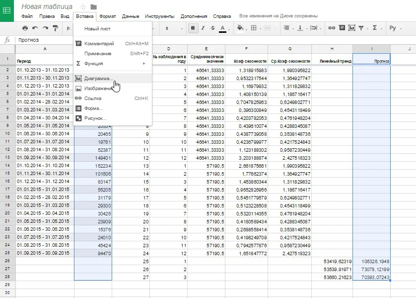
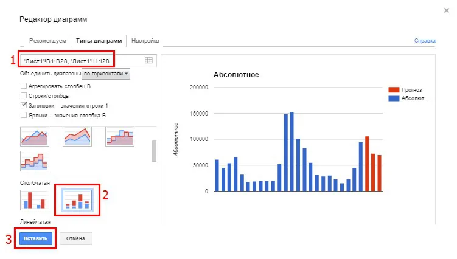
Если у вас не получилось построить прогноз по написанной инструкции, вы можете открыть докс, который приведен в качестве примера в этой статье, и скопировать его на свой Google Диск («Файл» => «Создать копию»).
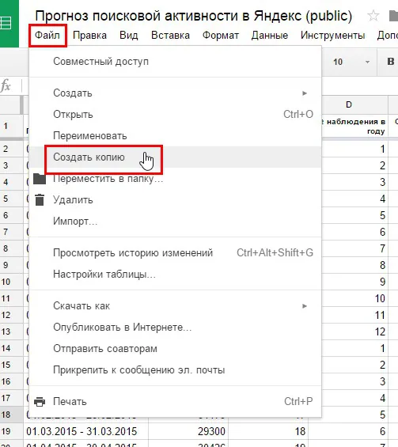
В принципе, в столбец «Абсолютное» можно внести данные не только о поисковой активности, но также и о продажах или о количестве кликов, если у вас есть эти данные за последние 24 месяца.
Проверяем алгоритм прогноза
Описанный алгоритм я протестировал на пяти поисковых запросах в поисковых системах Google и Яндекс. Список запросов для теста:
- купить кондиционер;
- поступление в институт;
- тур в Египет;
- купить обогреватель;
- купить учебники.
У всех выбранных для теста запросов — ярко выраженная сезонность с пиком как в летний, так и в зимний период. Тест проходил в течении трех месяцев. Отклонения прогноза от фактических данных по перечисленным выше поисковым запросам составили не более 37%.
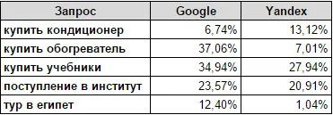
Графики факт/прогноз для Яндекса:
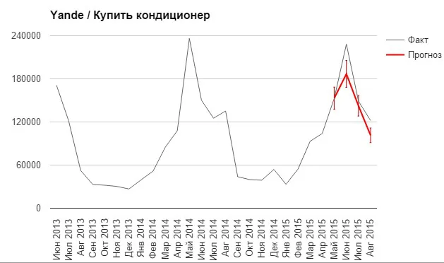
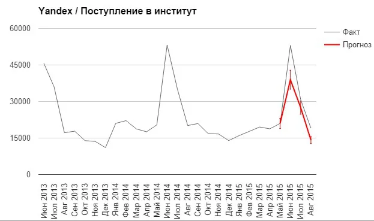
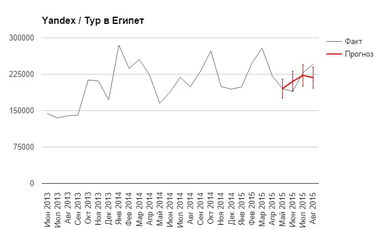
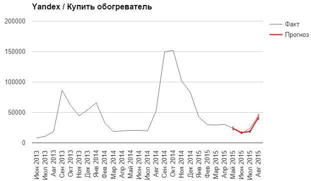
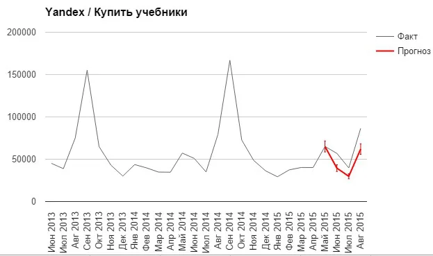
Как видно из представленных графиков, такой подход к построению прогноза имеет право на жизнь. Он достаточно прост и результат его работы находится в пределах допустимой погрешности.